Do we ever need modes?
Rebuilding the IA of Wayground's most-trafficked surface — the session setup page — twice
Overview
Wayground's session setup page is the surface every teacher hits before every session. It's the most-trafficked screen in the product. It was also where usage had calcified: 25% of all users only ever ran async games, only 6% ever migrated to live, and Test mode, the obvious home for serious assessment, reached 5% of active teachers. Anti-cheating, the most-requested capability in our research, sat locked inside a single mode.
The brief, when it landed on my desk in July 2025, was framed as "add more settings to the page." I pushed back. The page wasn't underbuilt. It was a faithful rendering of how the backend organized configuration, surfaced to teachers as if engineering's mental model were also theirs. Adding more settings would have made it worse. We needed to start from scratch. I owned the IA, the settings grammar, the principles framework, and page-level layout across both iterations that followed.
What followed was five months of work across two shipped iterations. The first re-architected the IA into horizontal capability buckets — Anti-cheating, Mastery, Gamification — instead of mode-coupled features. The second responded to a post-launch regression: teachers were reverting to Classic mode because the new IA, while structurally correct, didn't give them confidence their mode choice had persisted through to setup. The fix was theming as wayfinding — each mode got its own visual world, so teachers couldn't doubt where they were.
By Q4 2025, anti-cheating ran in 50% of all sessions, and sales cited it as a deciding factor in four enterprise deals within a month of launch. Test mode adoption grew from 5% to 27% of active teachers, Teacher Paced from 15% to 25%, Practice from 13% to 20%. Power-user behavior held steady.
Impact & results
Anti-cheating, unlocked from Test mode and rebuilt as a horizontal capability, became the headline.
- 50% — of all sessions now run with anti-cheating on. Sales cited it as a deciding factor in 4 enterprise deals within 1 month of launch, and it generated 30% of lead volume
- 5% → 27% — Test mode adoption among active teachers
- 15% → 25% — Teacher Paced adoption among active teachers
- 13% → 20% — Practice mode adoption among active teachers
- 20% → 22% — Mastery Peak share of all sessions. On a separate denominator, first-time Mastery Peak use rose 20–30% among teachers who had never tried it
Power users lost nothing. Time-to-host stayed flat through both iterations, and high-frequency teachers who knew exactly which mode they wanted kept their pace through the extra picker step. Mastery Peak usage sustained after first trial; opportunistic adoption became regular use.
The structural wins from iteration 1 also held. Anti-cheating and Gamification settled into use as horizontal capabilities. The bucketed IA scaled cleanly when capability designers added Reopen, Late Submission, and the dependency-aware Anti-Cheating Monitor sub-controls. The settings grammar — top-level toggles, subtitle-bearing toggles, parent/child hierarchies — worked across modes without modification.
The thing the metric doesn't show, and the thing I care about most: the IA we shipped is still extensible. New modes could be added without redesigning the page. New capabilities could slot into existing buckets: Late Submission, built into the structure after launch, reached 40% usage. The page wasn't designed for the nine modes that existed; it was designed for the eleventh, twelfth, thirteenth modes that would come later.
The problem
The brief was wrong
Half of new Wayground users dropped off at the game settings page. Of all users, ~25% only ever did async games. Only 6% ever migrated from async-only to live — but when they did, their game volume jumped 50%+. The setup page was a structural bottleneck for product discovery, not just a usability nuisance.
Three patterns were doing the damage.
The mode hierarchy was engineering debris
Wayground had nine modes — Practice, Classic, Accuracy, Teacher Paced, Mastery Peak, Test, Team, Paper, plus async/live splits — accumulated over years of feature additions. The naming reflected delivery variants and engine implementations, not how teachers thought about classrooms. A teacher trying to set up a "serious review with anti-cheating" had to know which combination of mode plus settings produced that experience. Most didn't.
Capabilities were trapped inside modes
Anti-cheating was bound to Test mode. Mastery goal lived only in Mastery Peak (live) and Accuracy (async). Gamification was scattered. A teacher who wanted "students to keep trying until they master this and not be able to cheat" couldn't compose those two desires. The system forced false binaries everywhere.
The "Customise" button was an admission of failure
The page surfaced 4-5 settings inline, then hid the rest behind a button labeled Customise. Teachers in usability testing said it directly: "not knowing what lies inside customise is super unintuitive." Anti-cheating — the most-explored unprompted setting in our research, requested by 6 of 8 teachers without prompting — was buried there. Every one of these issues traced back to the same root: the IA was a faithful rendering of how the backend organized session configuration, surfaced to teachers as if it were also their mental model.
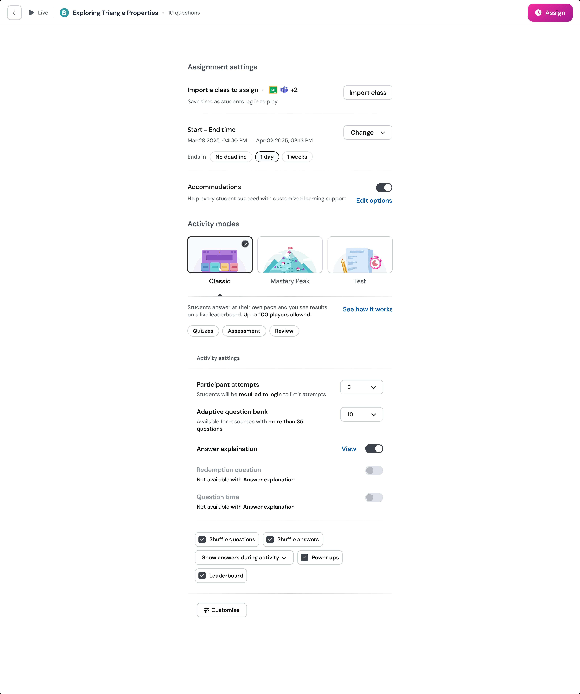
The provocation
The first thing I drew on a notebook page that week was the question that organized the whole project:
Do we ever need modes?
The nine modes weren't really nine distinct things. Practice and Classic were sibling modes — gamified-default, low-stakes — separated only by the async/live split. Accuracy and Mastery Peak were similar siblings, both mastery-focused. Test was the anti-cheating archetype across both delivery variants. Once you saw the modes as 3-4 behavioral archetypes wearing different costumes, the IA's whole foundation looked different. The modes weren't user concepts. They were engineering namespaces leaking through to the user.
That insight became the spine of every design decision that followed.
The honest framing for the project was on that same page: every existing setting had a constituency, every restructuring move had a cost. This was debt restructuring, not a fresh start — teachers had to discover the modes they were missing without getting lost on the way.
Research & discovery
A JTBD-led research scan
Astha (UXR) and I structured the research around a single question: can existing teachers complete session setup for their top jobs-to-be-done — successfully, seamlessly, and in alignment with what they actually intended?
We organized everything around nine teaching JTBDs (Topic Reviews, Independent Practice, Review Quiz, Warm-up, Review Lessons, Intro at P0; Unit Tests, Homework at P1; Instruction, Guided Practice at P2). Each JTBD had explicit success criteria mapped to capabilities — anti-cheating, mastery, gamification, accommodations.
Three streams ran in parallel:
- Twenty usability-testing calls across high-frequency, medium-frequency, and low-frequency teacher segments. Each P0 JTBD tested by 4 teachers. The bad-points column from those calls became the design backlog.
- Internal dogfooding with the Game Settings pod and twelve non-pod members across PM, design, analytics, and engineering. Same JTBD prompts. Different lens.
- Hotjar session reviews of real production traffic — split by month and live/async, owned by different team members. I owned May Live recordings. Watching teachers fail in production is a different kind of evidence than asking them to try in a UT.
In parallel, I built a demand inventory off the Wayground feedback page — 30+ teacher feature requests, categorized into pre-delivery / delivery / post-delivery / anti-cheating / class-management / student-experience / content / library, then graded on Reach × Impact × Solution Confidence × Effort. This was capability taxonomy more than screen design. I did it because the IA decisions about what to surface, what to demote, and what to add later needed an evidence base, not designer intuition.
Before drawing any screens, I mapped the surrounding context: the classroom variables (noisy, distracted, teacher needs a quick start), the behavioral telemetry questions (how often is mode chosen, which settings get changed, what's customised in focus mode), and the structural questions (the live/async split, modular profiles, mid-session edits). That context scan is what kept the later IA decisions grounded in the classroom rather than the config schema.
Four UX principles, evolved
Three were already in my notebook from the first week — speed, defaults, course-correct. Two more emerged from what we saw in research. The final set of four:
- Have a clear connection between setup and classroom consequence. Cathy's UT quote crystallized it: "Shuffle questions — what does this mean for my class?" Teachers were configuring without understanding what they were configuring.
- Defaults should ensure GOOD out of the box, customization makes it GREAT. Teachers don't have time to discover settings, and their perception of tool capability calcifies on first contact.
- Yes and, not either or. Mode-coupled capabilities forced false binaries — anti-cheating in Test mode or mastery in Mastery Peak. Teachers wanted both. The mode-archetype analysis demanded this principle.
- Teachers should be able to course-correct at any time. Hotjar showed teachers stuck mid-setup, abandoning, retrying. The system needed to forgive mistakes.
Two of the four came directly from research, not designer intuition. That distinction matters: principles aren't divinely received. They evolve as the team learns what's actually broken.
The design space had three axes: clarity (pre-setup vs real-time), accessibility (power user vs new user), and safeguard (system control vs teacher freedom). The state we shipped landed near the empirically-validated middle of all three.
Approaches
Four approaches as design space, not UI variations
Most "we explored multiple directions" sentences in case studies mean three Figma variations of the same idea with different colors. I wanted us to test four philosophical positions on what was actually broken — because the answer to "what should this page be?" depends on which problem you think is primary.
Approach 1 — Pedagogical default as a child inside mode + live preview
Treat each mode as a container for a pedagogical configuration. Show teachers the actual student-facing UI as they configure. Bet: teachers will become more deliberate if shown consequence. Risk: most engineering, slowest setup.
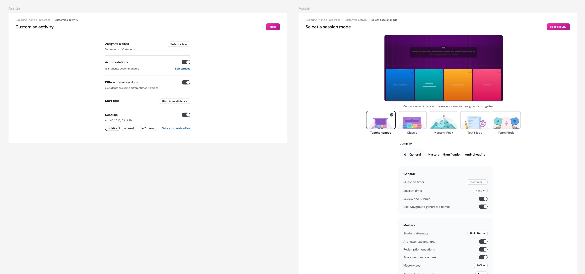
Approach 2 — Rename modes pedagogically
Replace "Classic / Test / Mastery Peak / Team / Teacher Paced" with "Individual Work / Teacher Paced / Competition." Each mode card carries a "feels like" line and a "good for" line. Bet: the mode names themselves are the bottleneck. Risk: breaks power-user mental models built over years.
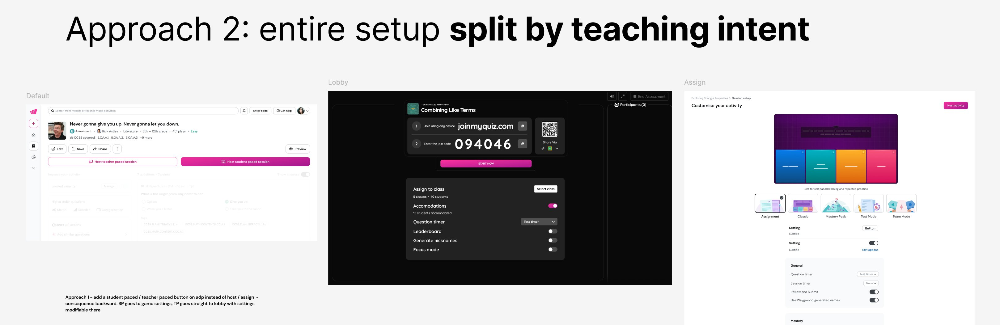
Approach 3 — Infer intent from content and title
If the resource is titled "Topic Review" and has 20 multiple-choice questions, the system pre-configures gamification on, anti-cheating off, and the teacher confirms. Bet: content metadata can drive setup. Risk: teacher-generated titles are wildly variable. Bad inference poisons trust.
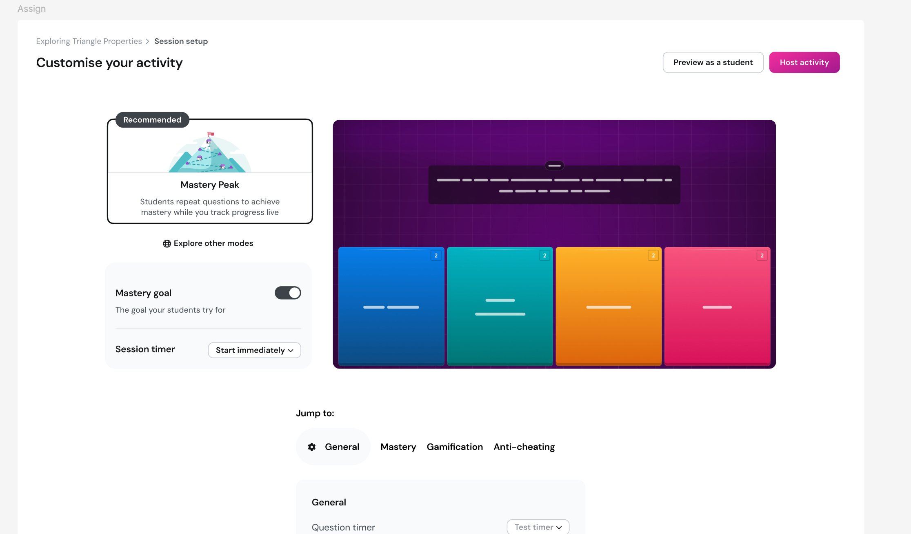
Approach 4 — Single CTA, quick-start templates
The setup page itself is the friction. Replace it with named scenario templates ("Topic Review Serious," "Practice Fun") that bypass configuration entirely. Bet: the most opinionated defaults possible. Risk: templates can't cover every JTBD.
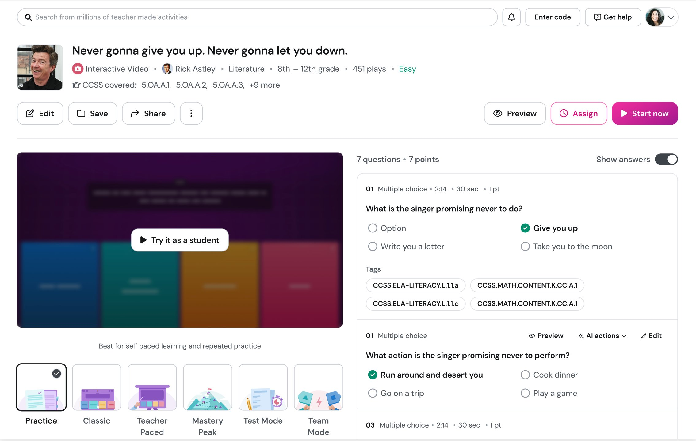
The testing revealed something I didn't expect: no single approach was right. Each had a piece worth keeping and a bet worth refusing. The synthesis we landed on borrowed from three of the four:
- From Approach 1 — the bucketed IA. Anti-cheating, Mastery, Gamification as capabilities, not mode-bound features.
- From Approach 2 — pedagogical framing, but moved upstream of mode selection (the "Student paced / Teacher led" decision before mode names appear).
- From Approach 3 — smart per-mode defaults, but without the ML inference. The system knew what each mode's pedagogical center of gravity was — Mastery goal for Mastery Peak, Session attempts for Classic.
The radical bets — collapsing nine modes into three pedagogical archetypes, the template-replaces-setup model — got left on the table. They were the most ambitious; they would have been the most disruptive to power users; the conservative synthesis served the median teacher better.
Why we couldn't copy our competitors
The obvious question at this point in any redesign is: what does the rest of the category do? We mapped the competitive landscape — Kahoot, Blooket, Pear Deck, Pear Assessment — to find out whether someone had already solved the problem we were stuck on. They hadn't, but the reasons why turned out to be useful in their own right.
Kahoot — defer to the lobby
Lightweight, lobby-first model. Pick a kahoot, click Host live, choose a mode (Classic, Team, Accuracy, Student-led), then configure during the lobby phase via a gear icon — autoplay, timer, name generator, 2-Step Join, lock joining. Modes are 4-5, not 9. Anti-cheating is essentially one toggle. Mastery isn't a first-class concept. The IA works because the complexity surface is small enough to defer most decisions until students are already joining.
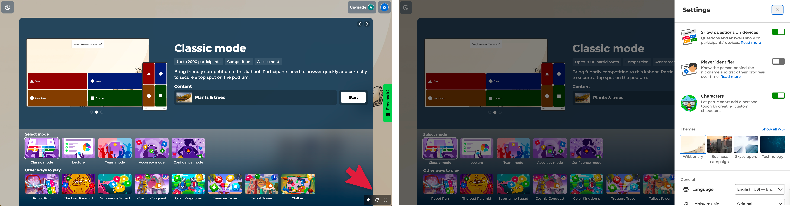
Blooket — mode identity is the product
12+ distinct live modes (Tower Defense, Gold Quest, Battle Royale, Crypto Hack, Cafe, Factory) each with bespoke settings. There's no horizontal capability layer at all — no anti-cheating bucket, no mastery bucket. Each mode is its own little universe. The IA works because Blooket leans into mode identity as the primary axis. The modes aren't engineering debris; they're the product.
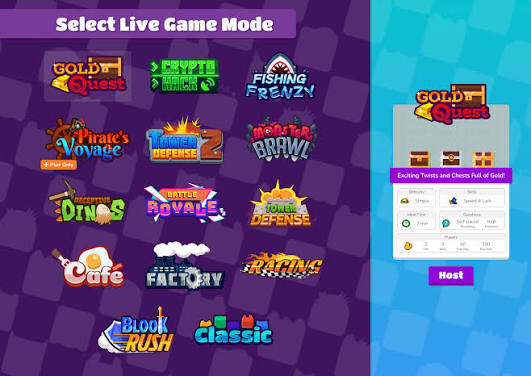
Pear Deck / Pear Assessment — reduce to a binary
Pear Deck reduces the modal decision to Instructor-Paced vs Student-Paced, with the option to switch mid-session. Pear Assessment adds proctoring layers (browser lockdown, dynamic passwords, accommodations) but the setup surface is comparatively flat. Both products work because they've kept modal complexity small.

The pattern: each competitor's IA works because their complexity surface fits their model. Kahoot's gear-in-lobby works because there are six settings that matter. Blooket's no-horizontals works because mode identity is the product. Pear Deck's binary works because the binary is the truth of the product.
Wayground had nine modes, three resource types (assessment, lesson, interactive video, passage, flashcards), live and async splits, and capability layers that genuinely needed to operate horizontally — anti-cheating that mattered in Test mode and Homework, mastery goals that mattered in Practice and Review. Borrowing Kahoot's pattern would have hidden critical settings behind a gear icon teachers wouldn't find. Borrowing Blooket's pattern would have killed the horizontal-capabilities insight that drove our entire IA. Borrowing Pear Deck's binary would have flattened genuine pedagogical differences.
The conclusion: none of the existing patterns scaled to our complexity. We needed a different IA — one that respected horizontal capabilities and preserved mode identity and deferred granular settings without hiding them. Not because we thought we were cleverer than Kahoot or Blooket. Because we had a different problem, and the existing patterns didn't fit it.
Iteration 1: the bucketed IA
What shipped in late summer 2025:
Five horizontal capability buckets
Assignment Details, General, Mastery, Anti-cheating, Gamification (plus Video for Interactive Video resources). Each visible inline. Anti-cheating and gamification could now be configured across every mode, not just Test or Classic. The launch banner said it explicitly: "Now available for all game modes: modify anti-cheating and gamification features."
A settings grammar
Top-level toggles for independent capabilities. Toggles with explanatory subtitles for settings that needed consequence framing. Parent toggles with indented child controls for capabilities with sub-features (Anti-cheating Monitor as parent; Disable right-click and Disable copy-paste as children). The dependency relationships became visible in the layout itself, not buried in disabled-state messages.
Eight UT-driven copy and placement decisions
"Use Wayground Generated Names" → "Anonymize Student Names." "Focus Mode" → "Anti-Cheating Monitor." "Show Answers During Session" reassigned from Anti-cheating to Mastery on dependency logic. Strike & Shield demoted into Gamification. Question Timer given three explicit states, addressing 220+ teacher requests for genuine timer enforcement.
Dependency toasts with course-correction
When toggling AI Answer Explanations turned off three dependent settings, the system showed a toast — "This has turned off: Show answer after each question, AI answer explanation, Question timer — Undo." Principle 4 (course-correct any time) rendered as a button.
I owned the IA, the settings grammar, and the page-level layout decisions. Natasha owned Reopen flows. Aayush owned Late Submission. The capability designers built features into the structure I'd defined.
I'd also proposed visual theming for the mode picker as part of iteration 1 — each mode getting its own color world and illustration. Engineering deprioritized it for scope. We shipped without it.
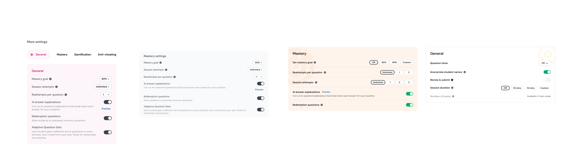
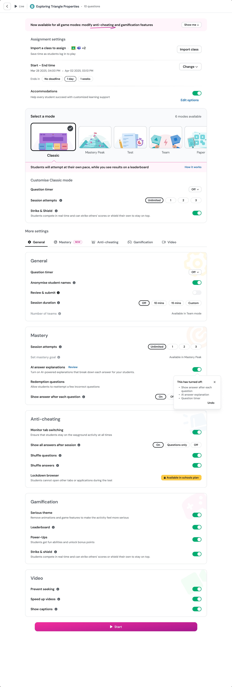
The regression
Iteration 1 went live. The structural wins held — anti-cheating got configured more often, settings adoption broadened, the help docs got rewritten around the new bucket names. But within weeks, post-launch UT and behavioral signal surfaced something we hadn't predicted.
Teachers were reverting to Classic. Specifically: teachers who'd previously used Mastery Peak in production were quietly switching back to Classic on the new page. First-time use of non-Classic modes was lower than we expected. The IA was correct. The behavior was wrong.
Astha laid out five hypotheses, in priority order:
- Mode persistence is unclear. Teachers picked Mastery Peak on the modal, landed on a setup page where Classic visually dominated the carousel, and lost confidence their choice had stuck. The selected-mode checkmark was too subtle.
- Double selection causes doubt. Picking on the first modal felt final; seeing "Select a mode" again on the setup page felt like the system was asking again. Uncertainty pushed teachers to the familiar.
- Lack of best-use guidance. No "best for" language to help teachers commit to non-Classic modes.
- Back navigation friction. Back from setup landed on the Activity Page, not the mode picker. Discouraged exploration.
- Feature availability confusion. Teachers didn't know which features (leaderboard, etc.) existed in non-Classic modes.
The diagnosis was sharp. The IA wasn't the bug. The bug was teacher confidence. The new structure had broken a quiet contract teachers had with the old design — when you pick a mode, the page should make you certain you're inside it. Iteration 1 didn't. This was the work most projects skip: watching after the first ship and treating a contradiction of the principles as data, not noise.
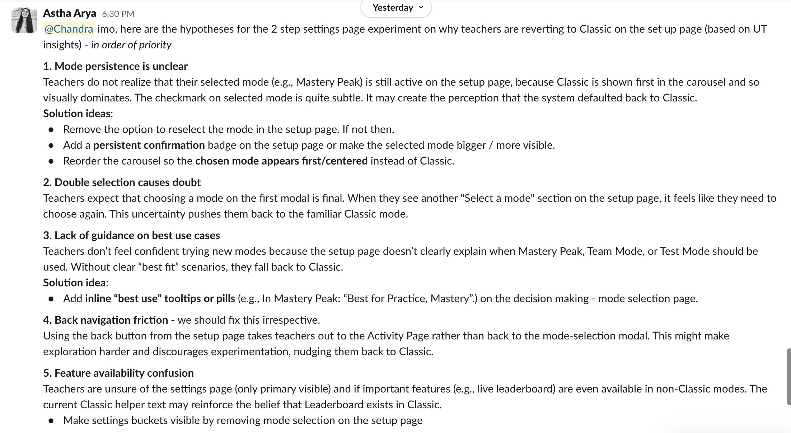
Three radical fixes I considered and discarded
Before settling on the conservative fix, I explored three more aggressive directions.
Discard 1 — JTBD-named buckets
Replace "Anti-cheating / Mastery / Gamification" with imperative pedagogical sentences: "Students don't cheat" / "Students work to mastery" / "Keep your students motivated" / "Get insights on students." Each setting showed its current state inline as a green-check or red-X. I rejected it because the imperative-sentence grammar was unusual UI, and the dashboard-status indicators conflicted with the actual task — teachers were there to configure, not audit.
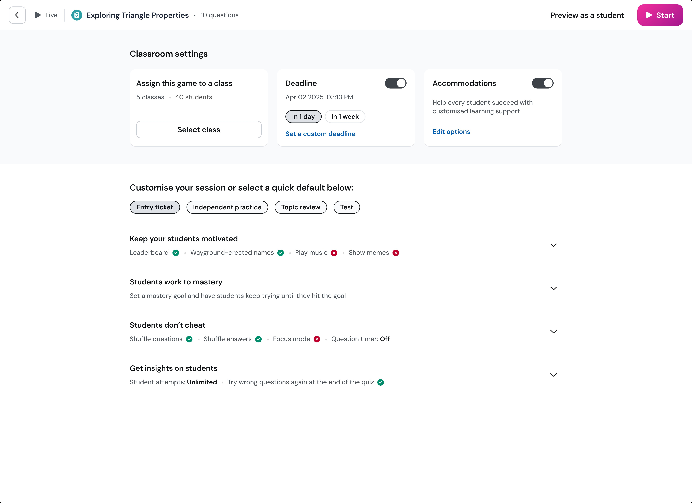
Discard 2 — Three pedagogical archetypes
Collapse nine modes into "Practice and mastery / Testing / Build your own mode." Most aggressive break with the existing power-user model. Rejected because "Build your own" was an admission the three-card collapse couldn't cover all teaching scenarios — which would have split user behavior in unhealthy ways and broken Mastery Peak's brand recognition for teachers who'd built habits around it.
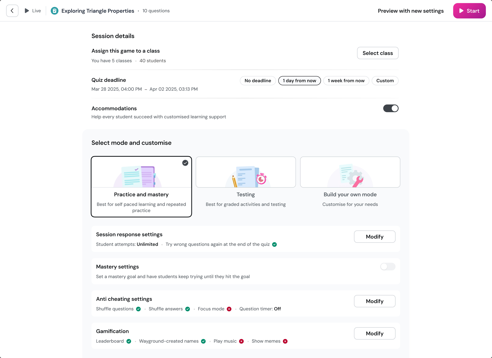
Discard 3 — Side-by-side layout
Two columns — pre-mode horizontals on the left, mode-and-mode-specific-settings on the right. Rejected because the columns scaled differently in height, the mode card lost visual primacy over the settings underneath, and the two-dimensional scanning required was harder than the original problem.
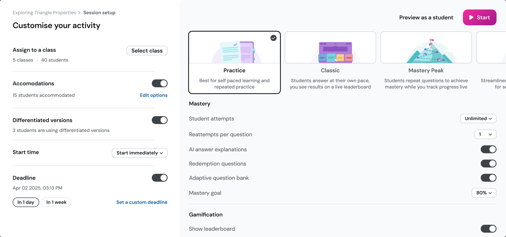
Iteration 2: theming as wayfinding
The fix, when we landed on it, was the idea I'd proposed during iteration 1 and seen deprioritized: each mode gets its own visual world.
The mode picker became a dedicated screen. Classic in maroon and pink with a leaderboard tile. Mastery Peak in teal with a mountain. Test Mode in dark indigo with a test-taker scene. Team Mode in crimson with versus-flag iconography. Mastery Peak got a "Students love this" recommendation badge — a lightweight social-proof surface that did what Approach 3's content-inference idea was reaching for, but without the ML.
Each setup page inherited its mode's theme. Mastery Peak's setup page was teal end-to-end, with the mountain illustration in the background. Classic's was maroon. The mode breadcrumb at the top showed all five modes with the current one highlighted. You couldn't doubt you were inside Mastery Peak when the entire page was teal with a mountain in the background.
The reference for this was video games. Fortnite changes the entire UI palette per mode. Halo changes the menu wallpaper per playlist. The principle is you are inside a mode and the world around you reflects that. Most B2B SaaS treats themes as cosmetic and modes as state flags. We used theming as IA — the visual language doing the wayfinding work that breadcrumbs and headers couldn't do alone.
Astha drove the prioritization call on which hypotheses to address. The themed mode picker addressed #1 (mode persistence) and #2 (double-selection doubt) directly. #3 (best-use guidance) got partially addressed by the badge and the mode-card descriptions. #4 and #5 got parked.
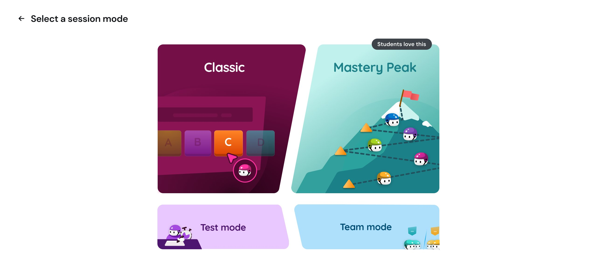
The settings grammar underneath the themes never changed — primary surface, four-bucket sub-nav, parent/child toggle hierarchy — identical across all five modes. The theme did the wayfinding; the scaffold did the configuring.
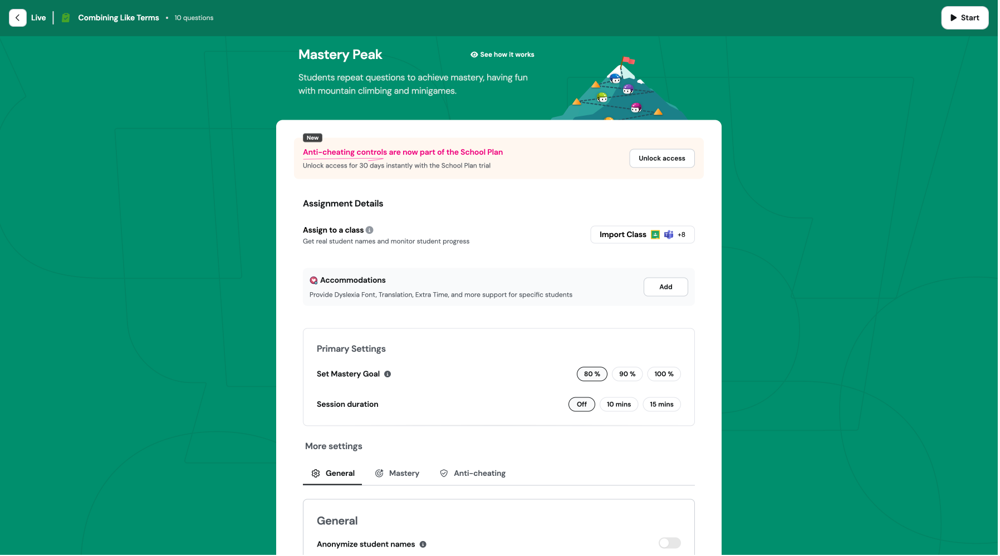
What I'd take from this
Correct design and adopted design are different problems
Iteration 1 was structurally correct — every research insight, every principle, every UT finding pointed at the bucketed IA. It also caused a measurable behavioral regression. The gap between correct and adopted is where senior IC work actually lives. The discipline is to keep watching after launch and respond to the data even when it contradicts the principles.
Theming can do IA's job
I'd been treating per-mode theming as a design-system flourish — "we made it cute." Iteration 1's regression taught me theming is a wayfinding system. When teachers couldn't trust that mode persistence had carried through to setup, the fix wasn't a bigger checkmark or a clearer breadcrumb. It was making the entire visual environment carry the mode identity, the way Fortnite or Halo does. The B2B SaaS default is to treat themes as cosmetic and modes as state flags. That default leaves wayfinding work undone.
Synthesis is harder than commitment
The most ambitious approaches I tested — mode renames, template-replaces-setup — would have made the louder case study. None of them shipped. The work that shipped was a synthesis that took the structurally durable wins from each approach and rejected the radical bets that would have destroyed power-user behavior or required engineering investments we couldn't justify. Senior design isn't picking the boldest option. It's editing your own ambition against constraints you didn't get to choose.
The unsolved problem
First-time-user education is still broken. A teacher who's never seen Mastery Peak doesn't get a walkthrough — and we deliberately didn't build one. Teachers onboard heterogeneously: some try at home, some try in professional development sessions before class, some YOLO it directly in front of 30 students. A walkthrough that interrupts the YOLO path would have been actively harmful for that segment. The right answer is probably contextual education — surfaced only when telemetry suggests a teacher is mid-classroom and stuck — but we didn't have the engineering bandwidth to build that. It's the work I would have prioritized next.
I owned the IA. I didn't own the synthesis alone.
Astha (UXR) named the post-launch regression and prioritized the hypothesis order. Natasha and Aayush built capability features into the structure. Engineering deprioritized theming the first time and shipped it the second. The PM made the call on JTBD prioritization. The designer doesn't own those decisions. What I owned was the IA scaffolding, the settings grammar, the principles framework, and the visual decisions that made theming work as wayfinding. That's the right scope for "I led this." Anything more would be over-claiming.